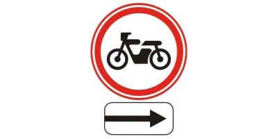
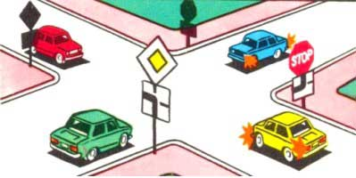
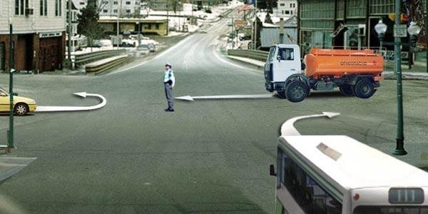
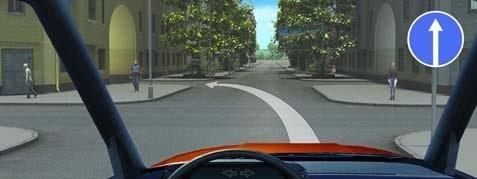
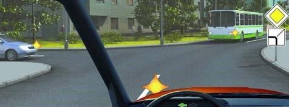
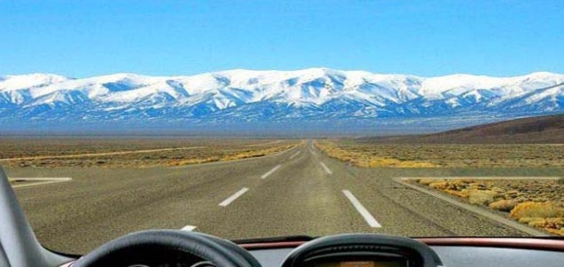
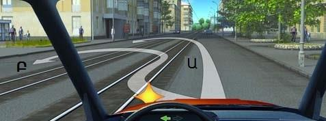
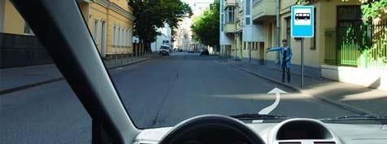

Թեստ 13
30:00
1. «Ճանապարհային երթևեկության անվտանգության ապահովման մասին» ՀՀ օրենքի համաձայն` մոպեդ է համարվում `
2. ՙՃանապարհային երթևեկության անվտանգության ապահովման մասին՚ ՀՀ օրենքի համաձայն մայթ է համարվում
3. Տրանսպորտային միջոցների շահագործումն արգելվում է, եթե`
4. Տրանսպորտային միջոցների շահագործումն արգելվում է, եթե
5. Դուք երթևեկում եք երեք գոտի ունեցող երկկողմ երթևեկությամբ ճանապարհով: Ո՞ր դեպքում է թույլատրվում մուտք գործել միջին գոտի:
6. Ի՞նչ են նշանակում հետևյալ նշանները:

7. Տվյալ իրադրությունում ո՞ր հետագծով է թույլատրվում արգելքի շրջանցումը:

8. Դեղին ավտոմոբիլը խաչմերուկը կանցնի`

9. Նշված հետագծերով երթևեկությունը շարունակելու իրավունք ունեն`

10. Հետադարձ կատարել նշանից հետո թույլատրվում է
11. Թույլատրվո՞ւմ է նշված բակ մուտք գործել

12. Ճանապարհը պետք է զիջեք

13. Թվարկածներից ո՞ր դեպքում կարող է ավտոբուսի վարորդն անցնել երկկողմ երթևեկության եռագոտի ճանապարհի մեջտեղի գոտի, որը օգտագործվում է երկու ուղղությամբ երթևեկության համար:

14. Թույլատրվու՞մ է արդյոք ուղևորների փոխադրումը քարշակող ավտոբուսում:
15. Թույլատրվու՞մ է արդյոք երկաթուղային գծանցով փոխադրել գյուղատնտեսական, ճանապարհային, շինարարական և այլ մեքենաներ ու մեխանիզմներ:
16. Ո՞ր հետագծով է թույլատրվում հետադարձը վարորդին

17. Խաչմերուկում ո՞ր ճանապարհն է համարվում գլխավոր
18. Նշված իրավիճակում թույլատրվում է արդյո՞ք կանգառ կատարել ուղևոր նստեցնելու նպատակով
